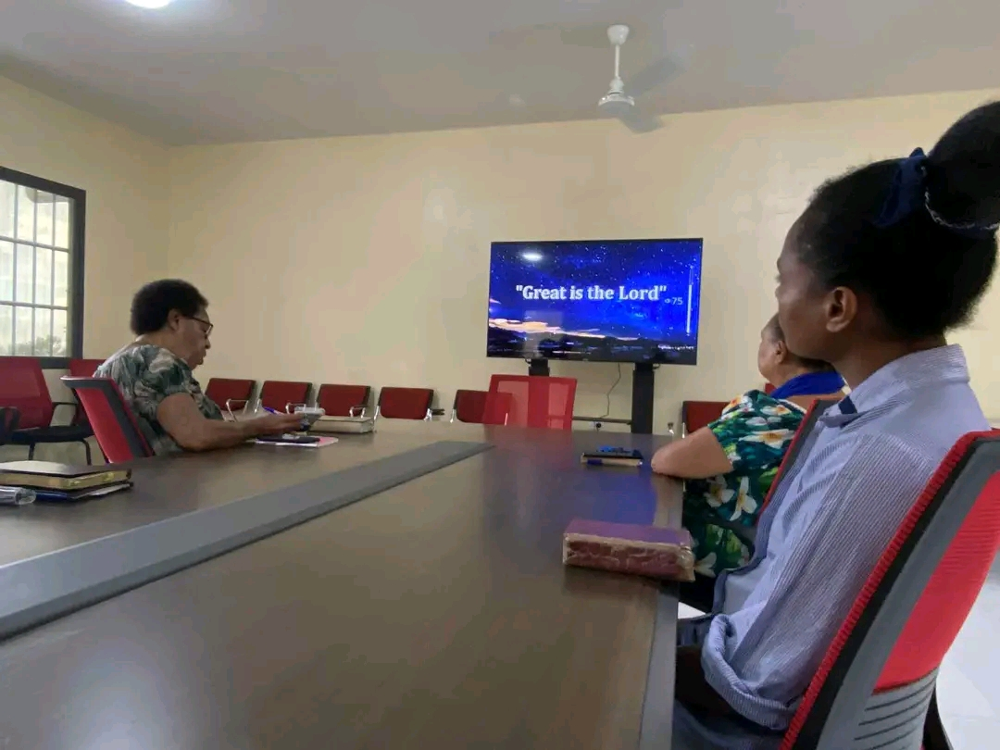
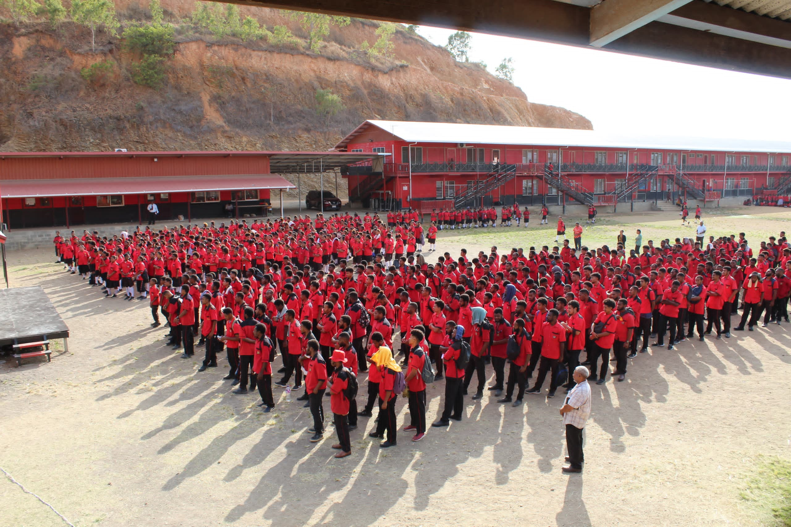
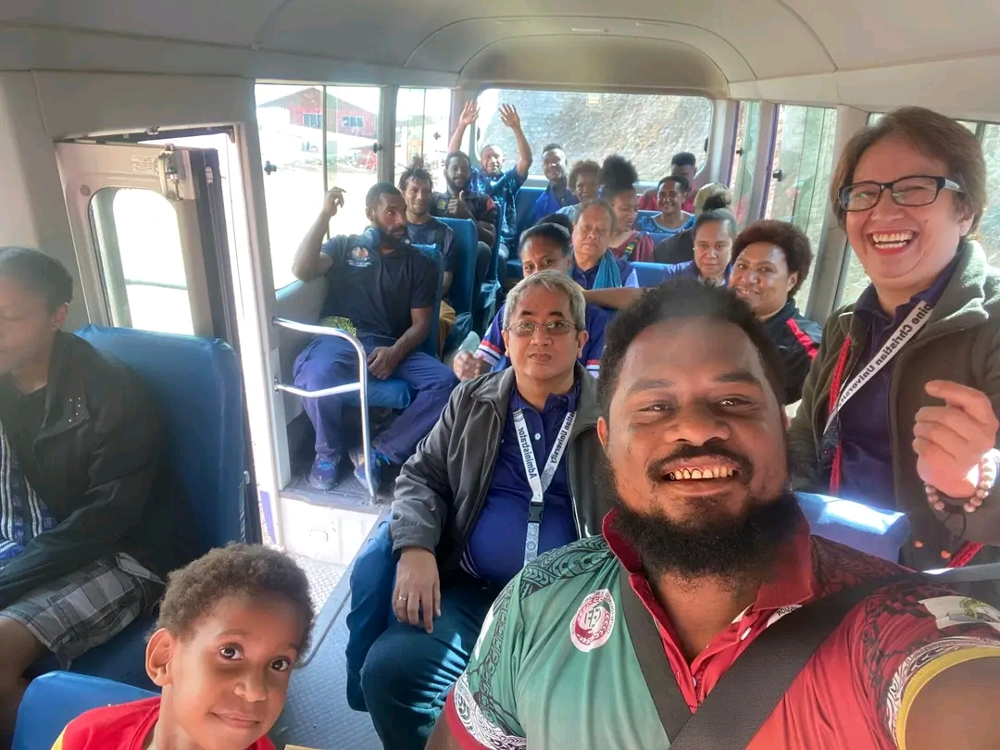
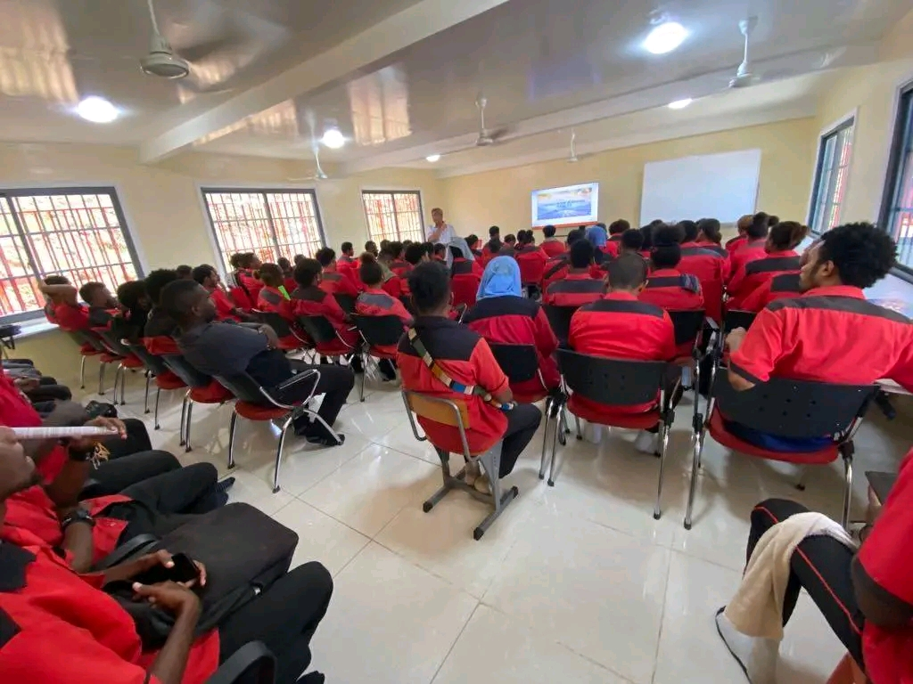

Our Journey in Pictures
(Replace these placeholders with actual photos of your school)





Learn how our school began, how it has grown, and how God has led us through each chapter of our journey.
PNGC Institute of Higher Education started as a small training centre with a simple vision: to provide quality Christian education to the young people of Papua New Guinea. In its early days, the school operated with a few classrooms, limited resources, and a handful of dedicated staff who were committed to serving students both academically and spiritually.
Over the years, the school has expanded to offer more programs, improved facilities, and modern learning resources. Despite the changes, one thing has remained the same: our commitment to nurturing students who are not only knowledgeable, but also disciplined, respectful, and God-fearing.
The school was established with a small pioneer group of students and teachers. Classes were held in temporary buildings and makeshift classrooms.
New permanent classrooms, a small computer lab, and a library were built, allowing the school to increase its enrolment and improve learning outcomes.
ICT and science programs were strengthened with additional computers, laboratory equipment, and updated curriculum to meet modern education standards.
During the COVID-19 period, the school introduced blended learning methods, combining classroom teaching with online support and digital resources.
Today the school continues to grow, embracing technology, upgrading facilities, and strengthening its mission to prepare students for higher education, employment, and service to their communities.




Watch a short presentation of how our school has grown over the years. You can use either a local video file or a YouTube link.
If you don’t have a local video file, you can embed a YouTube video instead.